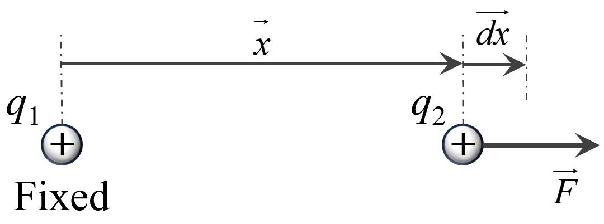
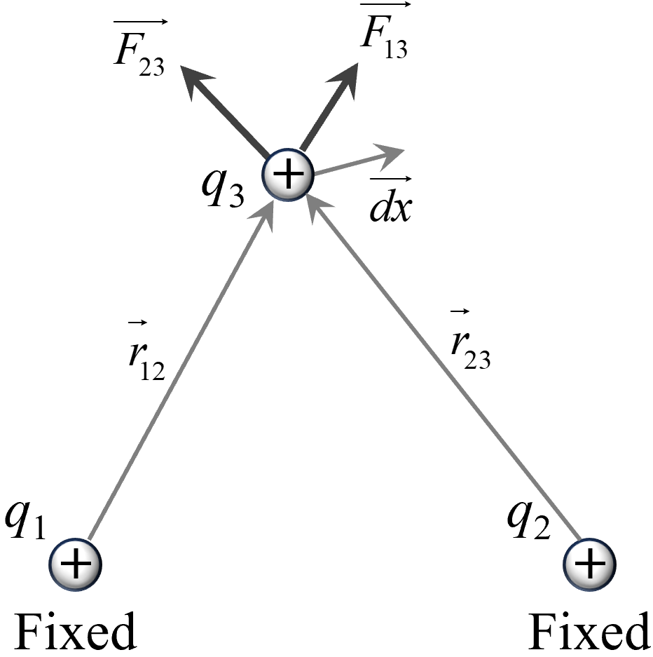

Potential energy, in general, represents the ability of a system to do work due to
its configuration. For any conservative force, potential energy is defined as the
negative of the work done by that force. For example, if gravitational forces
perform positive work during a process, the gravitational potential energy of the
system decreases accordingly.
Similarly, in the case of electrostatic forces, the change in electrostatic
potential energy of a system of charges during a process is defined as the negative
of the work done by electrostatic forces on the system. When charges are separated
by infinite distances, their interactions become negligible, and the potential
energy is conventionally set to zero. Thus, for any process:
If, in the initial state, the charges in the system were infinitely separated,
making the initial potential energy zero, then:
\(\qquad \text{P.E.} = -W_{\text{Electrostatic from }\infty}\)
In words,
The potential energy of a system of charged particles is the negative of the work
done by electrostatic forces in assembling the system from infinite separation.
To understand better about the potential energy of system of charges, consider
the
following systems:
Two Particle System
Consider two charges \( q_1 \) and \( q_2 \) separated by \(
x \). To find the change potential energy of the system for a change in
separation, we shall calculate the work done by electric field in the
process. Since the force of repulsion between the charges depends on the
separation between the particles, we require integration to find the
total work. This is shown in following diagram:

Diagram: Displacement \( \vec{dx} \) of charge \( q_2 \) when
the
position is \( \vec{x} \).
The work done \( dW \) by the
electrostatic force during this displacement of \(\vec{dx}\) is given
by:
\(\qquad
dW = \vec{F} \cdot \vec{dx}
\)
The electrostatic force \( F \) between the charges is given by
Coulomb's law. So,
\(\qquad
dW = \dfrac{k q_1 q_2}{x^2} \, dx
\)
To find the total work \( W \) required to displace the charge from \(
r_1
\) to \( r_2 \), we integrate \( dW \) from \( x = r_1 \) to \( x = r_2
\):
\(\qquad
W = \displaystyle\int_{r_1}^{r_2} \dfrac{k q_1 q_2}{x^2} \, dx
\)
Evaluating the integral:
\(\qquad
W = k q_1 q_2 \left[ -\dfrac{1}{x} \right]_{r_1}^{r_2}
\)
\(\Rightarrow\quad
W = - k q_1 q_2
\left( \dfrac{1}{r_2} - \dfrac{1}{r_1} \right)
\)
The change in potential energy \( \Delta U \) is the negative of the
work done by the electrostatic forces:
To find the potential energy \( U \) of the system of two charges
separated by \(r\), we can find the change in potential energy of system
starting from infinite separation (when potential energy is zero) to the
given separation \(r\). Thus,
\(\qquad
U-0 = k q_1 q_2 \left( \dfrac{1}{r}-\dfrac{1}{\infty} \right)
\)
Therefore, the total potential energy \( U \) of the two-particle system
is:
\( U = \dfrac{1}{4\pi\varepsilon_0}\dfrac{q_1 q_2}{r} \)
Three Particle System
Now, consider adding a third charge \( q_3 \) to the system
of charges \( q_1 \) and \( q_2 \). The charge \( q_3 \) is
placed near this set and is displaced by a small amount \(
\vec{dx} \). The work done \( dW \) during this displacement
involves the interactions between \( q_3 \) and both \( q_1
\) and \( q_2 \).

Diagram: Displacement \( \vec{dx} \) of charge \(
q_3 \) in the presence of charges \( q_1 \) and \(
q_2 \).
The infinitesimal work done \( dW \) by the electrostatic
forces during this displacement \( \vec{dx} \) is given by:
This expression represents the changes in potential energy
of the pairs \( q_1 \)-\( q_3 \) and \( q_2 \)-\( q_3 \).
To find the total change in potential energy \( \Delta U \)
as \( q_3 \) is brought from infinity to its final position,
we integrate over the path of \( q_3 \):
Here, \( U_{13} \) represents the potential energy between
charges \( q_1 \) and \( q_3 \), and \( U_{23} \) represents
the potential energy between charges \( q_2 \) and \( q_3
\).
Thus, the change in potential energy when building the
system from two charges to three charges is given by:
Since the initial system of two charges \( q_1 \) and \( q_2
\) already has potential energy due to their interaction,
the final potential energy \( U_f \) of the three-charge
system is the sum of the initial potential energy \( U_i \)
and the change in potential energy \( \Delta U \):